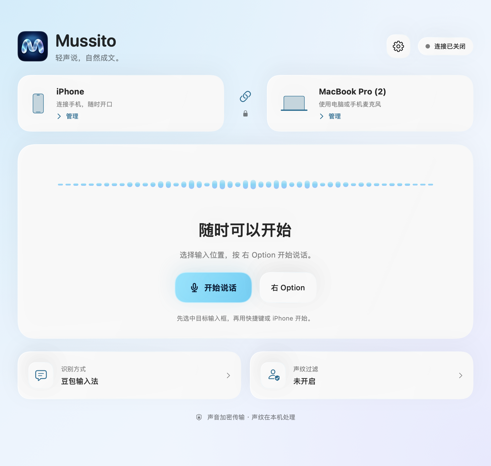
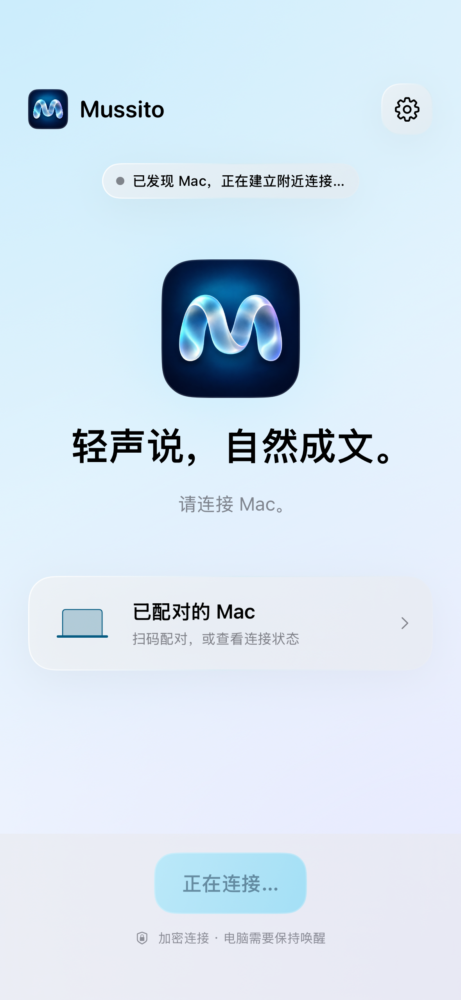

离声音更近一点。
用 iPhone 作为 Mac 的麦克风，也可以直接使用电脑、耳机或外接麦克风。
为 iPhone 与 Mac 而做
把 iPhone 放在手边，
让说出的话，落在 Mac 的输入框里。
Mac 端计划免费提供 · iPhone 端准备上架


开发版界面 · 正式版本以发布时为准
留住表达的节奏
写邮件、记下一个念头，或把一段话说完整。
选好输入位置，剩下的交给声音。
我想把今天讨论的内容整理一下。
先记录最重要的想法，
再慢慢补上细节。
用 iPhone 作为 Mac 的麦克风，也可以直接使用电脑、耳机或外接麦克风。
在 Mac 选择输入框，再开始说话。识别与文字输入由 Mac 端完成。
可选声纹过滤，在自己的 Mac 上登记和判断说话人。它不能分离同时重叠的人声。
从连接到开口
安装 Mussito，完成权限与识别设置。
配对自己的 Mac，首次建议连接同一局域网。
保持手机在前台、Mac 唤醒，结束后查看输入的文字。
我们正在准备第一次公开发布。
查看发布进度